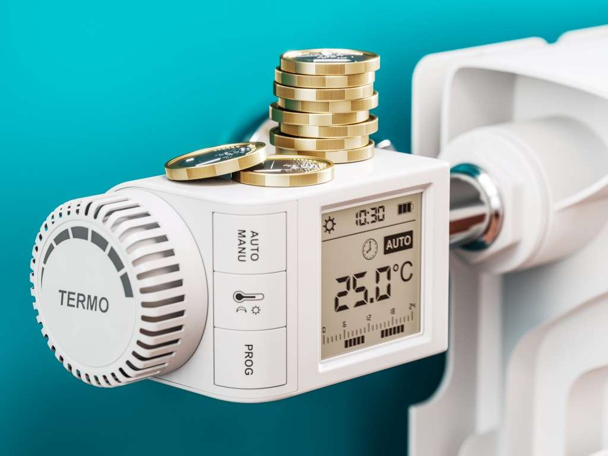

Ihr fachpartner für sanitär anlagen in mainz
Artan Haus- & Gebäudetechnik ist Ihr Fachpartner für Sanitäranlagen in Mainz. Wir bieten individuelle Lösungen für Sanitärinstallationen, Modernisierungen und Reparaturen. Mit Fokus auf Qualität und Nachhaltigkeit sorgen wir für effiziente und zuverlässige Ergebnisse, die Ihre Bedürfnisse erfüllen. Vertrauen Sie auf unsere Expertise für maßgeschneiderte Haustechniklösungen.
Wellness
Wählen Sie für Ihr
Zuhause ebenfalls luxuriöse Elemente wie einen Whirlpool, eine Sauna und mehr für
zusätzlichen Komfort und Entspannung.
Barrierefreiheit:
Auch bei körperlichen Einschränkungen können Sie Ihre sanitären
Einrichtungen dank unserer barrierefreien Planung problemlos nutzen.
Exklusive Bäder und Duschen:
Exklusive Bäder und Duschen: Bei der Badezimmergestaltung sind der Kreativität fast keine
Grenzen gesetzt. Sie können zwischen klassischen oder modernen Stilen wählen, und wir
beraten Sie gerne, welche Optionen am besten zu Ihren Bedürfnissen passen.
Ihr Mini-Spa: Zeit für eine neue Badewanne:
Ein entspannendes Bad ist
besonders in den kalten Monaten unverzichtbar. Die Auswahl an Badewannen ist mittlerweile
riesig, von modernen Vieleckwannen bis hin zu eleganten freistehenden Ovalwannen. Für
kleinere Badezimmer bieten rechteckige Modelle eine platzsparende Lösung. Um das
Badeerlebnis zu verbessern, können Sie Wasserbeleuchtung oder Unterwasserscheinwerfer
hinzufügen und Temperatur sowie Ablauf per Knopfdruck steuern.
Neues Duscherlebnis im Handumdrehen
Nachhaltigkeit: Moderne Duschsysteme bieten viele Funktionen wie Kopf- und
Handbrausen, Wasserdüsen, Schwammkorb und Thermostat mit Verbrühschutz. Sie lassen sich
schnell installieren, ohne die Wand zu beschädigen. Wir beraten Sie, welches System am
besten zu Ihrem Zuhause passt, und bieten Lösungen für Duschen in Nischen oder unter
Dachschrägen. Für Duschen in der Badewanne installieren wir hochwertige Trennwände aus Glas
oder Kunststoff, die pflegeleicht sind und Schimmelbildung verhindern.
Die Zufriedenheit unserer Kunden hat für uns oberste Priorität. Für unsere regelmäßigen und Wartungskunden stellen wir einen Notdienst zur Verfügung!


